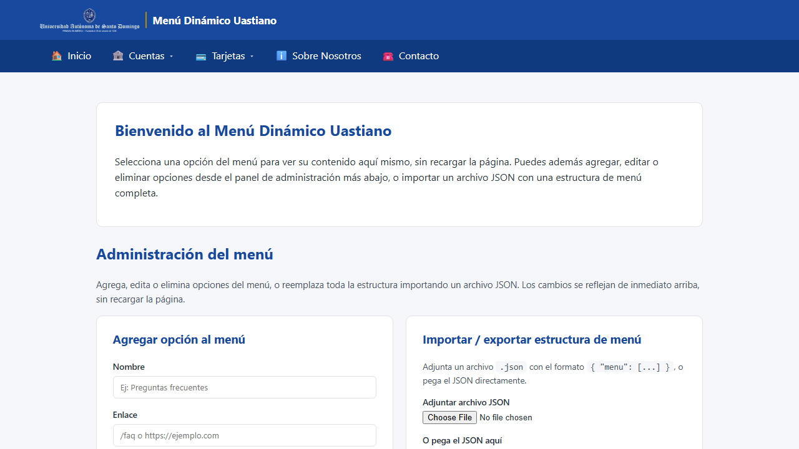
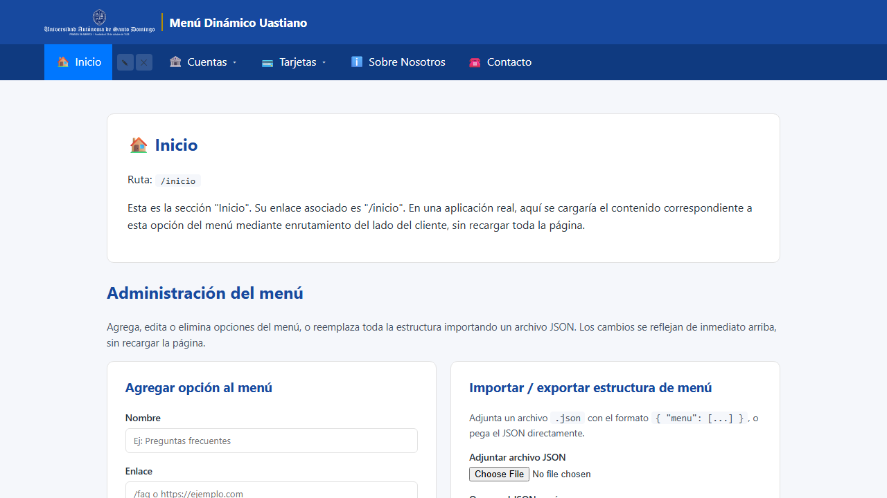
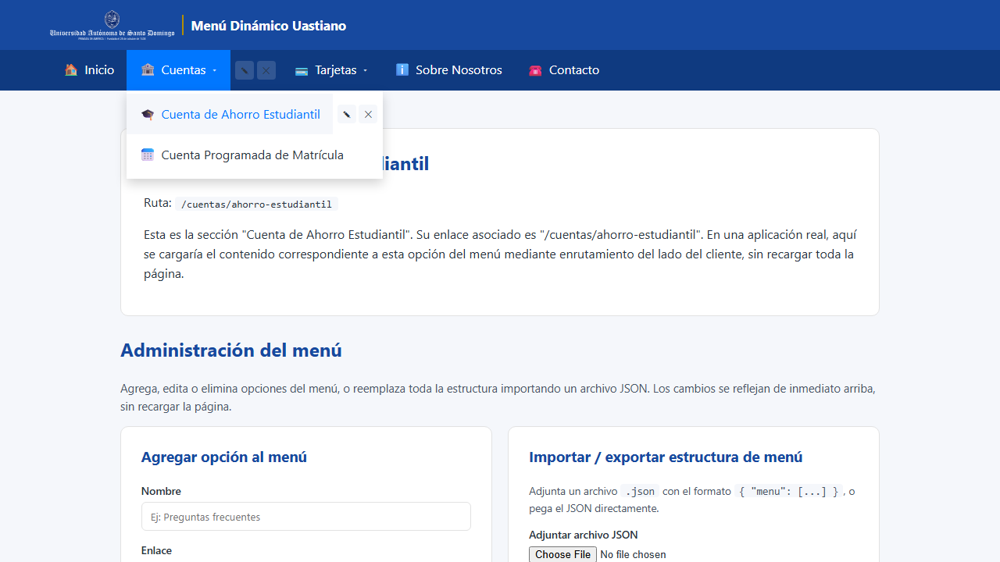
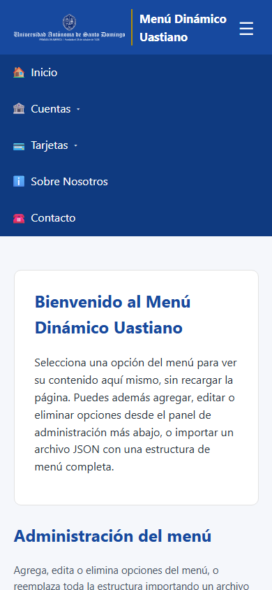
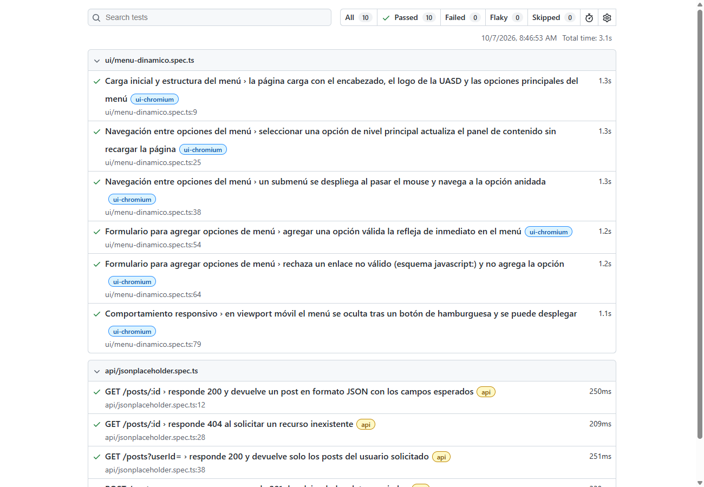

Resumen de ejecución
Herramienta elegida: Playwright (sobre Cypress), porque permite
combinar en un mismo framework pruebas de navegador y pruebas de API (fixture
request), genera automáticamente capturas de pantalla y un reporte
HTML interactivo con trazas de cada ejecución.
Aplicación y API bajo prueba
| UI |
Menú Dinámico Uastiano (Práctica 4 — Vue 3 + TypeScript) https://ecompute30.github.io/Lab_programacion3_INF5170/P4_MenuDinamico_Vue/dist/ |
|---|---|
| API |
JSONPlaceholder — API pública de prueba, sin autenticación https://jsonplaceholder.typicode.com
Nota: la guía sugería la Countries API ( |
Casos de prueba de UI
| # | Caso | Qué valida | Resultado |
|---|---|---|---|
| 1 | Carga inicial de la página | Título, logo de la UASD y las 5 opciones del menú principal son visibles. | Aprobado |
| 2 | Navegación a una opción principal |
Al hacer clic en "Inicio" el panel de contenido muestra el título y la ruta
/inicio, y la URL del navegador no cambia (navegación del lado del cliente).
|
Aprobado |
| 3 | Navegación a una opción de submenú | El submenú "Cuentas" se despliega al pasar el mouse y al seleccionar "Cuenta de Ahorro Estudiantil" se actualiza el contenido. | Aprobado |
| 4 | Formulario: agregar opción válida | Enviar el formulario con nombre y enlace válidos agrega la opción al menú de inmediato. | Aprobado |
| 5 | Formulario: validación de enlace inválido | Un enlace con esquema javascript: es rechazado con un mensaje de error y no se agrega al menú. |
Aprobado |
| 6 | Comportamiento responsivo | En viewport móvil (390×844) el menú se oculta tras un botón de hamburguesa y se despliega al pulsarlo. | Aprobado |
Casos de prueba de API
| # | Endpoint | Código esperado | Qué valida | Resultado |
|---|---|---|---|---|
| 1 | GET /posts/1 |
200 | Content-Type JSON y estructura del post (id, userId, title, body). |
Aprobado |
| 2 | GET /posts/999999 |
404 | Recurso inexistente responde con el código correcto y un cuerpo JSON vacío. | Aprobado |
| 3 | GET /posts?userId=1 |
200 | La respuesta es un arreglo JSON y todos los elementos pertenecen al userId solicitado. |
Aprobado |
| 4 | POST /posts |
201 | El recurso creado se devuelve con los mismos datos enviados y un id asignado. |
Aprobado |
Evidencia de ejecución
Capturas tomadas automáticamente por Playwright al finalizar cada prueba de UI, más una captura del panel del reporte interactivo:







Salida de consola de la ejecución completa (npx playwright test):
Running 10 tests using 6 workers ✓ 1 [ui-chromium] Carga inicial y estructura del menú › la página carga con el encabezado, el logo de la UASD y las opciones principales del menú (1.5s) ✓ 2 [ui-chromium] Navegación entre opciones del menú › un submenú se despliega al pasar el mouse y navega a la opción anidada (2.1s) ✓ 3 [ui-chromium] Formulario para agregar opciones de menú › agregar una opción válida la refleja de inmediato en el menú (1.9s) ✓ 4 [ui-chromium] Navegación entre opciones del menú › seleccionar una opción de nivel principal actualiza el panel de contenido sin recargar la página (2.1s) ✓ 5 [ui-chromium] Formulario para agregar opciones de menú › rechaza un enlace no válido (esquema javascript:) y no agrega la opción (2.1s) ✓ 6 [ui-chromium] Comportamiento responsivo › en viewport móvil el menú se oculta tras un botón de hamburguesa y se puede desplegar (1.9s) ✓ 7 [api] GET /posts/:id › responde 200 y devuelve un post en formato JSON con los campos esperados (285ms) ✓ 8 [api] POST /posts › crea un recurso y responde 201 devolviendo los datos enviados (361ms) ✓ 9 [api] GET /posts/:id › responde 404 al solicitar un recurso inexistente (317ms) ✓ 10 [api] GET /posts?userId= › responde 200 y devuelve solo los posts del usuario solicitado (295ms) 10 passed (4.6s)
Hallazgos
Mensaje de error de validación duplicado
Al enviar un enlace inválido desde el formulario "Agregar opción", el mensaje de error
(mensajeError) es un estado reactivo compartido entre el formulario de alta/edición
y el panel de importación de JSON. Esto provoca que el mismo mensaje aparezca duplicado en
pantalla (dos elementos role="alert" con el mismo texto) aunque el usuario solo
interactuó con uno de los dos paneles. No afecta la validación en sí — la opción inválida sigue
siendo correctamente rechazada — pero es una mejora de UX pendiente para una futura iteración
(separar el estado de error por componente, o mostrarlo en un único lugar común).
Cómo reproducir esta suite
git clone https://github.com/ecompute30/Lab_programacion3_INF5170.git cd Lab_programacion3_INF5170/P51_PruebasAutomatizada_UI_API npm install npx playwright install chromium npx playwright test # ejecuta las 10 pruebas (UI + API) npx playwright show-report # abre el reporte HTML interactivo